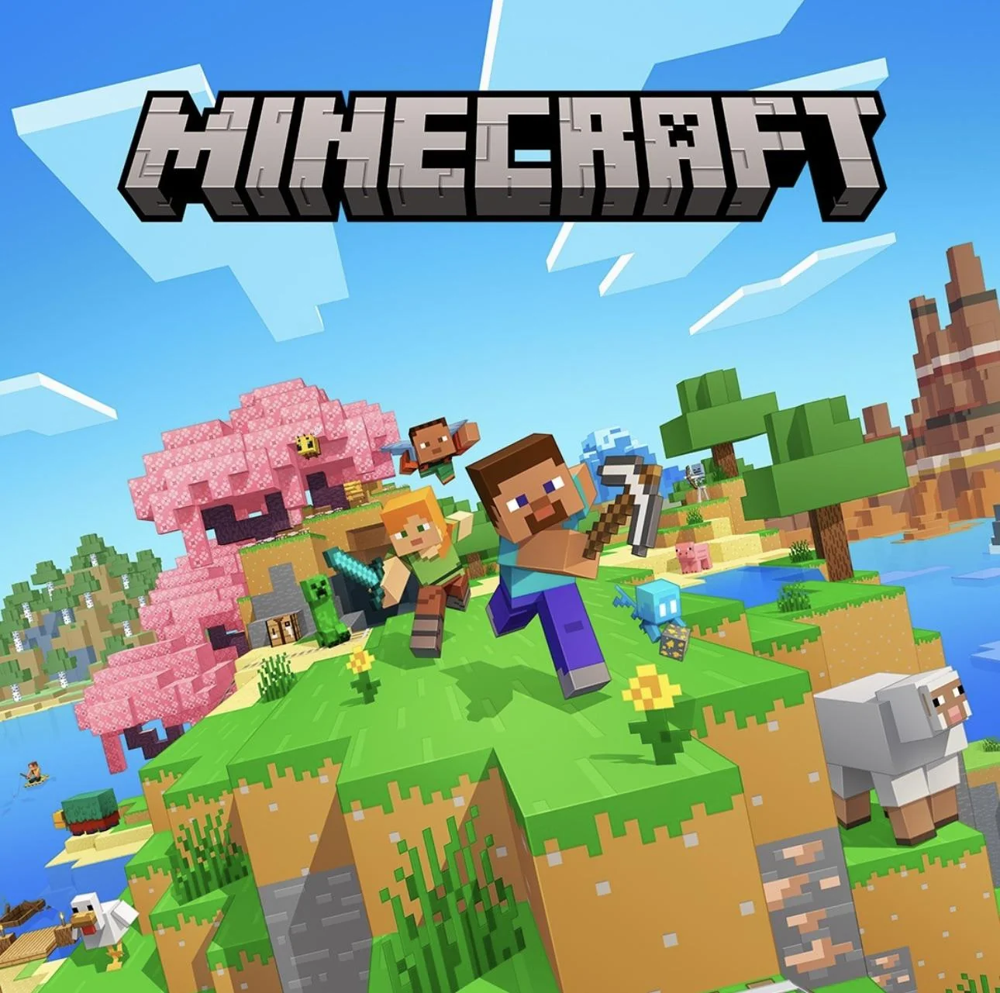

Minecraft es un videojuego de construcción, aventura y supervivencia lanzado oficialmente en 2011 por el estudio sueco Mojang, fundado por Markus Persson (Notch). El juego se basa en un mundo generado por bloques y permite a los jugadores construir, explorar, recolectar recursos y enfrentarse a criaturas dentro de un entorno abierto y completamente interactivo.
Minecraft se distingue por su jugabilidad no lineal. El modo Supervivencia reta al jugador a recolectar recursos, crear herramientas y sobrevivir a enemigos nocturnos. Por otro lado, el modo Creativo otorga acceso ilimitado a todos los bloques y permite construir libremente. Esta libertad ha inspirado a millones de jugadores a construir desde casas sencillas hasta réplicas de ciudades y monumentos reales.
Con sus icónicos gráficos pixelados y cúbicos, Minecraft transformó su simplicidad visual en una fortaleza. Este estilo retro, lejos de limitar la experiencia, ayudó a crear una identidad visual inconfundible que favorece tanto el rendimiento como la creatividad ilimitada de la comunidad.
Además de su éxito comercial, Minecraft ha sido una herramienta educativa poderosa. Escuelas alrededor del mundo lo han integrado como recurso didáctico para enseñar matemáticas, diseño, lógica e incluso programación. También ha influido en la cultura pop, generando millones de videos, mods, libros, y hasta películas en desarrollo.
Con más de 300 millones de copias vendidas y una comunidad activa de modders, servidores multijugador y creadores de contenido, Minecraft es uno de los videojuegos más exitosos y queridos de la historia. Su continua evolución, gracias a actualizaciones regulares y una comunidad apasionada, garantiza que su legado perdure durante generaciones.